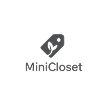

Parent-Friendly Design: Enhancing the Experience of Buying & Reselling Children’s Clothing
Course project for the Google UX Design Certificate.
A parent-friendly marketplace that makes it easy to buy and resell kids’ clothing with clear info, secure payment, sustainability options, and helpful support.
The problem
Many parents struggle to find an affordable, trustworthy platform with easy navigation, detailed item descriptions, user reviews, secure payments, eco-friendly filters, and responsive support or fashion advice.
The goal
Create a reliable, convenient platform where parents can buy/sell kids’ clothing effortlessly — with clear descriptions, secure checkout, sustainability options, and personalized help.
My role & scope
- Role: UX Researcher & UX Designer; coded this case study (HTML/CSS).
- Duration: One Month
- Deliverables: Research synthesis, personas, journey map, lo-fi → hi-fi, interactive prototype.
What makes MiniCloset different?
- Clear condition filters and photo guidance
- Simple Message seller option for convenient chat
- Trust signals: reviews + seller badges
User research
Interviews, a small survey/focus group, and a competitive scan revealed three core segments:
- Brand-focused (trend/labels)
- Eco / second-hand (sustainability first)
- Budget-sensitive (best value)
Pain points
- Affordability & trust: budget options + safe transactions
- Decision clarity: detailed info + reviews
- Sustainability: easy eco/second-hand filters
- Chat / messaging: a simple “Message seller” option that’s convenient
Personas
Sarah Johnson
“Finding affordable, good-quality clothes for my kids is a constant struggle. I wish there was an easier way to buy and resell their outgrown clothes.”
- Age: 32
- Education: BA Elementary Education
- Location: Suburban area
- Family: Married, kids 3 & 5
- Occupation: Stay-at-home mom
Goals: save money and time; buy reliable quality. Frustrations: trust in sellers/buyers; lack of details. Values clear descriptions, reviews, secure payments.
Diego Ramos
“I want great-looking pieces at a fair price. Clear condition filters like ‘New with tags’ or ‘Like new’ help me decide fast.”
- Age: 29
- Education: BFA Graphic Design
- Location: Urban
- Family: Uncle & part-time caregiver
- Occupation: Freelance designer
Key needs: crystal-clear condition choices. New with tags, Like new, Gently used, Good, Fair; quick seller chat; transparent fees and delivery.
Testing & Changes
-
Defer login until publish.
Insight: Early login made people bounce.
Change: Ask to log in after the seller fills the “List item” form.
-
Interest picker to personalize feed.
Insight: Users wanted faster relevance.
Change: Added “Choose a few interests” (e.g., Baby 0–12m, Shoes, Outerwear) before the feed.
-
All Products page cleanup.
Insight: Original layout felt crowded.
Change: Clearer grid, consistent cards, surfaced condition/price, better spacing.
-
Show seller location + quick contact.
Insight: People wanted City/State and easy messaging.
Change: Seller card shows City, ST with a prominent Message seller action.
Privacy: City/State only (no exact address); optional to hide city.
Try the interactive prototype
Open the Figma prototype to click through the key interactions.
Visit prototype ↗